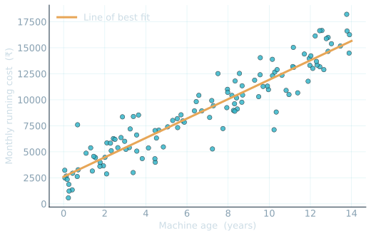
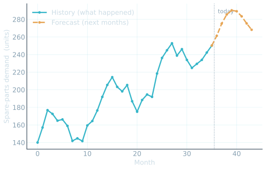
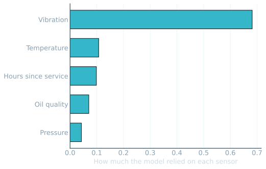

Predictive AIfor engineers.
Learn the pattern from past examples — then predict the next case. The quiet, decades-old half of AI that runs the world.
A little theory.
A lot of hands-on.
You run it
We wrote the code. You press a button and watch the model learn. No programming required.
Just a browser
Six notebooks in Google Colab. Nothing to install, no maths to memorise.
Numbers → text → speech
The same one idea, applied to three kinds of real data.
Most people hold one of two beliefs.
"AI can do anything."
Magic. Limitless. About to replace everyone.
"AI is nonsense."
Hype. A buzzword. Nothing real underneath.
The truth sits in between — and it is surprisingly ordinary. Today you will see exactly where it is powerful, and exactly where it falls short.
It learns a pattern from the past.
A seasoned technician who has inspected thousands of machines can look at a new one and say "this will give trouble soon." Not magic — they have seen the pattern before. We teach a computer to do exactly that.
From past examples to a prediction.
It draws a boundary between good and bad.
Every dot is a past machine — green worked fine, red needed service. The model finds the line between them. A new machine just falls on one side. You build this in Module 00.

Two different jobs.
Makes a call
- "This machine will need service"
- "Reject this part" · "Cost ≈ ₹4.2L"
- Decades old; runs in banks, factories, airlines
Creates content
- Writes text, makes images, speaks
- ChatGPT, image generators
- The newer wave everyone talks about
You already trust it every day.
Spam filter
Learned from millions of flagged emails.
Fraud alert
Spots a transaction that breaks your pattern.
Arrival time
Predicts your ETA from past traffic.
Recommendations
Predicts what you are likely to want next.
The scary words are simple words.
Dataset. Feature. Label. Training. Accuracy. Five terms — and once you have them, none of this is mysterious again.
A dataset is just a table.
| Hours used | Temperature | Vibration | Needed service? |
|---|---|---|---|
| 900 | 65°C | 2.1 | No |
| 5,200 | 86°C | 4.6 | Yes |
| 3,100 | 74°C | 3.3 | No |
Each row is one machine. Each column is one measurement. That is the whole of it.
Clues in. Answer out.
| Hours | Temp | Vibration | Needed service? |
|---|---|---|---|
| 900 | 65°C | 2.1 | No |
| 5,200 | 86°C | 4.6 | Yes |
Learn from most.
Judge on the hidden rest.
Like an exam: never let the student see the exact paper first. We judge the model only on cases it has never seen.
Accuracy = how often it is right on the hidden set. A model claiming 100% is usually cheating — honest numbers have gaps.
One idea. Three kinds of data.
Numbers
Sensor readings, measurements, costs, time series.
Text
Written maintenance and defect reports.
Speech
Spoken status reports, turned into text and acted on.
Real jobs it does.
Predictive maintenance
Service what is about to fail — before it fails.
Quality control
Catch out-of-spec parts at the line.
Demand forecasting
Plan spare-parts stock months ahead.
Report & voice routing
Sort written and spoken logs automatically.
The roadmap.
What is Predictive AI?
Classification
Regression & Forecasting
Predictive Maintenance
Text Analytics
Speech Analytics
What is Predictive AI?
Classification
Regression & Forecasting


Predictive Maintenance

Text Analytics
Speech Analytics
Powerful. Not magic.
Only as good as the data
Biased or thin records → biased or thin predictions.
Never 100%
Real data surprises. We measure the gap honestly — missed faults, fuzzy forecasts.
It assists, not replaces
It ranks and flags with a reason. The engineer still decides.
It was always the same picture.
Learn the pattern from past examples → predict the next case. Neither magic nor nonsense — a tool you can now reason about.
Thank you.Questions?
Generative AI — the half that creates — is covered in the sessions to come. Today you met the half that predicts.